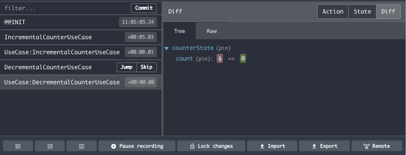
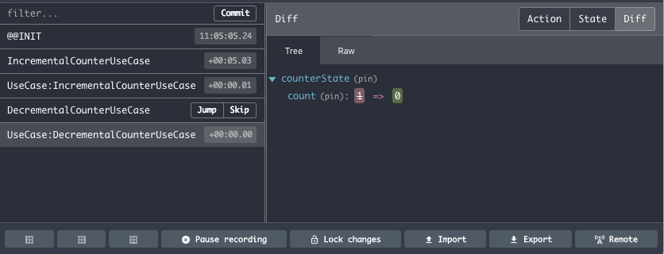

autoscale: true
The Concept of Almin

Almin is a State management library for JavaScript

Almin features
- Scalable
- Semi-middle(1,000LOC) – Large(100,000LOC)
- Testable
- Implement UseCase/Store/Domain as component
- Debuggable
- Logger/DevTools/Performance monitoring
- Layered Architecture
- DDD/CQRS
Different team structures imply different architectural decisions. -- Clean Architecture Robert C. Martin
The Concept of Almin
- Write Your domain in Your code
- Split up Read stack and Write stack
- Unidirectional data flow
- Prefer Readable code to Writable code
- Monitor everything
Write Your domain in Your code
- You can control domain layer
- You can write your domain mode with Pure JavaScript
- You domain not need to subclass of Almin things
- Almin support application layer
- Application layer use your domain model
- If you drop to use almin, not need to rewrite your domain
Example: UseCase
Almin provice UseCase class that is a pert of application layer
import { UseCase } from "almin";
import yourDomain from "./your-domain";
export ApplicationUseCase extends UseCase {
execute(){
// Application Layer use your domain
yourDomain.doSomething();
}
}
Split up Read stack and Write stack
- In Flux/Redux
- Store has Application logic/state(M) and View state(N)
- The Complexity: N × M (multiplication)
- In Almin
- Domain has Application logic/state(M) – Write state
- Store has View state(N) - Read state
- The Complexity: N + M (addition)
Related topic: Command Query Responsibility Segregation(CQRS)
Example: Repository
- Almin help to support Repository pattern
- You can save your domain(application state) into the repository
- Store read application state from the repository
- Store convert the application state to view state
Realted topic: Model View ViewModel(MVVM), ViewModel
Unidirectional data flow
View -> UseCase -> Store ... -> View -> UseCase -> Store
- UseCase only report success or failure that is Promise
- UseCase can write to Store, But can not read from Store
- Store does't know any UseCase
- View can not write state to Store directly
- View can execute any UseCase
- View can observe the change of Store
Related topic: Flux

Prefer Readable code to Writable code
- Almin prefer Explicit/Readable code to Implicit/Writable code
- Almin support TypeScript language and Almin is type-safe
- Props
- No magic code
- Just write and Just work
- Cons
- Redundancy
Monitor everything
- You can observe life-cyle events of almin
- logging events that are changing of state etc..
- Integrate almin into DevTools
- Profiling performance of almin with other library
- Illustrate your UseCase diagram
 

 Conclusion
Conclusion
- :package: Repo: almin/almin
- :memo: Document: https://almin.js.org
- :scroll: Examples: almin/examples
- :link: Work with React, Vue etc...